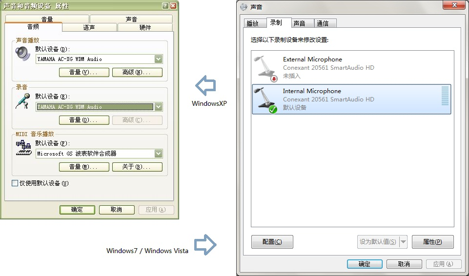
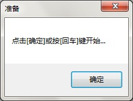
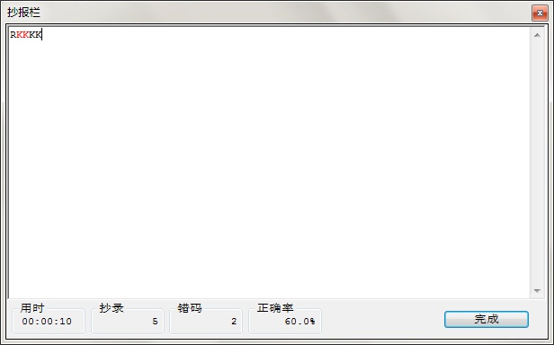
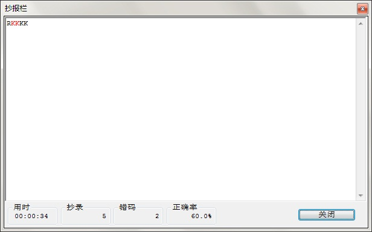

练习

Lakey这是一个多功能且完全免费的CW练习/收/发软件，供大家学习研究，有需要源码的朋友可以访问Lakey的主页www.lakey.cn下载 (目前原域名: www.layala.org将继续使用), 由于该主机使用动态DNS访问一台非固定IP主机, 并不能保证100% 7x24小时运行, 如果不能下载, 请给我发邮件或加为MSN索取(idirect3d@hotmail.com)。 不便之处望朋友们谅解。在未来，我会不断改进其功能和修正错误。
最新的开发进展
v2.1(Pencil)
（1）实现了由BA3CE建议的发送练习功能，并能够将练习时发送的文本记录下来；
（2）新增加的频谱显示将频率坐标轴方向反向，即频率较低的数据显示在靠下的位置；
v2.0(Zongzi)
（1）响应众多HAM朋友的意见，同时也是对过去Lakey功能缺陷的弥补，修正了自动键功能（感谢BG8ST及其他提出了此问题但没有留下呼号的朋友）；
（2）修正了“／”符号的Morse编码错误（感谢BD1GXH）；
（3）引入FFT算法；
（4）增加了频率域与时间域相结合的频谱分析显示功能。应该说，此功能是本次Lakey的最大功能升级。 它可以将混杂在实际嘈杂电波中的CW信号明显的“标记”出来，从而帮助接受者通过眼睛来识别Morse编码。 该功能的灵感来源于Foobar2000这款音乐播放软件的频谱分析功能。
本软件的目标是设计成一个使用简便，能够尽量利用一般PC本身具有的硬件功能和性能（主要指CPU的运算和声卡的音频捕捉/播放能力）， 实现不用另接特殊外围接口电路，不用改/加装电键等，即可让PC具有摩尔斯电码（Morse Code）的收发能力软件。未来可逐渐通过对PC硬件性能的挖掘， 实现对音频信号进行分析、过滤、处理。
从Lakey 2.0版本开始，Lakey版本中将去掉RELEASE/BETA标记，取而代之的将是为每一个新的版本赋予一个有趣的名字代号。 如2.0版本被赋予Zongzi（粽子）这个代号。但应该说明，Lakey项目本身将继续立足于实验目的，因此作者并不保证所有功能都是完美可用的， 即所有版本可能都带有BETA测试版本的意味，这点请大家使用时务必注意。 同时希望大家继续多提意见，帮助作者不断完善Lakey。这点在对以往版本的改进过程中已经被证实是最为重要的手段。在此感谢所有提出过意见或建议的朋友们！
支持虚拟自动键和手键发送方式。
支持多台计算机通过网络，实时进行CW通联和练习。
支持对音频信号的频率域、时间域的单独和组合分析显示。
利用PC声卡的音频捕捉播放功能，实现摩尔斯电码的收/发。收报时可自动实现摩尔斯电码到字母/数字的翻译转换； 发报时可以选择采用手工CW或者直接键入字母/数字两种方式。
手工方式可以使用键盘按键或者鼠标按键作为电键。也就是说，一台电脑通过普通音频连接线连接到普通发射/接收设备即可实现CW通信或练习。
通过并口、串口或其它以I/O地址寻址的计算机接口，实现了对外部发信机的简单发射控制。
生成任意抄报练习音频文件，可以放到手机等便携设备方便随时练习。
支持发送练习。
软件界面从上到下大体分为4部分，如下图所示：
后面章节将对这些部分分别介绍。以上两种界面模式，可通过将不同.ini文件复制为Lakey.ini文件来实现。
首先要把收信机的音频输出接到PC的音频输入口，如：Line in, Aux in, CD audio in等等。由于软件使用单声道处理，而一般这些接口都为双声道，因此最好将两个声道并联后接收信机的单声道输出。
将操作系统的录音来源选择为接入的接口，如果来源选择不对将不能实现收报的摩尔斯码翻译。Windows的录音来源可进入[控制面板->声音和音频设备]中进行选择，如下图：
在上面的窗口中点击录音栏中的[音量…]按钮

在这里选择接入接收机音频输出信号的接口
完成上面的步骤，就可以收报了。收报信息中包括输入音频的波形、简单频谱分析、CW点记录和翻译后的的字符。 使用鼠标左键和右键点击频谱分析控件可以分别改变波形幅度和频谱分析坐标系（线性/对数）。
要注意的是，在录音控制界面中，应尽量调整输入接口的电平，使软件显示的波形振幅尽量大且没有削波失真。
从Lakey2.0版本(Zongzi)开始，新增加了结合频率、时间、分布能量显示的综合频谱图。 这个功能，可以帮助收报者，从嘈杂的无线电环境中发现和辨别有规律CW信号。
在Lakey界面右上方新增加的这个频谱图形中，横轴为时间域（不断滚动），纵轴为频率域（CW“音频”波长）， 某一点的亮度为某一时刻某一频点的振幅（可以理解音量或者能量）。 这里需要注意的是，在靠下方显示的是收信机输出音频频率较低的信号。
同一个电台的CW信号通过收信机输出后的音频信号，一般为一个固定频率， 在频谱显示时一般会体现在一条直线上。因此使用者可以通过寻找同一水平线上有规律的间断线段来识别一个电台。 而通过不同水平线也可以用来区分不同电台的信号。
使用者可通过调节频谱增益旋钮(Spectrogram)来调节频率显示增益（亮度），以实现最佳的显示效果
这里需要提醒使用者的是，实际的显示和使用效果， 与收信机接收信号质量/输出电平、计算机的录音端口增益设置、Lakey的采样数量设置（设置页面）、 Lakey的频谱增益设置（主界面Spectrogram旋钮）等都有直接或关联的关系， 组合调整这些设置使信号与背景噪音能够获得一个比较好的显示对比度，让收报者能够比较容易的辨别CW信号， 这通常需要充分利用收信机、计算机声卡以及数字处理程序的动态范围。 而这也许需要一点点耐心。
在未来，Lakey会不断完善频谱分析功能，适时推出计算机自动识别CW信号功能，甚至有可能实现多电台的自动识别和自动应答。 如果您在这方面有好的想法，可以联系我，作者在此先表示感谢！
首先需要点击发送模式按钮，调整到“Manual”模式(缺省)，然后使用鼠标键点击“CW”按钮模拟手键发报，也可以使用键盘中的[Enter]键模拟手键发报。Lakey在按下按键时会发出声音，抬起时关闭声音，同时会在发送窗口显示键击记录，并试图用摩尔斯电码翻译为字符、数字或标点。不能翻译的部分显示为‘#’。
首先需要点击发送模式按钮，调整到“Auto”模式，然后使用鼠标左/右键点击“CW”按钮模拟自动键发报。自动键有L/R和R/L两种模式(di/da)，可以按照使用者习惯进行调整。与手动键一样，Lakey会对发送的信号进行翻译。
直接敲击键盘上的字母或数字键，系统将自动把键入的信息转换成摩尔斯电码，并输出到发送队列；同时，在发报信息的最下部会显示这个发送队列。
点击[File…]按钮，打开一个要发送的文件。系统将把打开文件中符合摩尔斯电码的字符内容发送到4.2中介绍的发送队列。
这种方式适用于当使用非CW方式发射模式时，如使用FM方式搭载摩尔斯音频信号的方式。现在在U/V段已经有利用这种方式进行摩尔斯收发练习的HAM，如北京的144.650MHz。
如果需要将音频摩尔斯电码发送到发信机，只需将PC的音频输出接到发信机的音频输入端口即可。
这种方式适用于当使用标准CW方式发射模式时。当使用鼠标、键盘进行击发，或者键盘字符输入、文本文件输入时，通过并口的某一个针脚的电平来控制CW发信机起停，从而代替传统电键进行CW发射。其中，并口输出针脚电平规则可以通过设置界面随意调整。祥见：端口控制
并口具体针脚定义如下：
| 针脚序号 | 说明 |
| 1 | STROBE 选通 |
| 2-9 | DATA0-DATA7 数据0-7 |
| 10 | ACKNLG 确认 |
| 11 | BUSY 忙 |
| 12 | PE 缺纸 |
| 13 | SLCT 选择 |
| 14 | AUTO FEED 自动换行 |
| 15 | ERROR 错误 |
| 16 | INIT 初始化 |
| 17 | SLCT IN 选择输入 |
| 18-25 | GND 地线 |
点击[Pause]按钮可以暂停发送发送队列中的内容。再按[Continue]继续发送。这里需要说明的是，在暂停时仍可使用直接CW键击发报。
Lakey现在可以支持网络通联，如果您希望与另一个HAM通过网络进行通联，那么需要进行以下两步操作：1、启用网络通联功能（参见：网络）；2、了解对方的IP地址，并且在网络参数中，将对方IP地址添加到主机列表中。设置好以上两步，您所发送的摩尔斯电码将通过网络传送到对方主机，并通过扬声器和显示器传达给对方。
在这里可以对系统用到的大多数参数进行调整
上面的规则即适用于发送，也适用于接收分析。应适当调整，以适应自身习惯和接收信号的特点。
但要注意的是，过多的采样数量会过多的消耗CPU资源，有可能造成对其他功能的影响！经测试，使用Intel(R) Core(TM)2 Duo T6670@2.2GHz，采样数量设定为256时，CPU占用率小于20%，平均为15%左右。
上面的开启和关闭两个参数，对应端口的输出数据；如：当设置为01时，相应设置状态下的输出为16进制的01，对于0378并口来讲，就是2针(D0)为高电平，3-9针(D1-D7)为低电平。
由于软件还处于测试期间，并未对参数进行合法性检查，如果不适当的调整参数，有可能造成软件不能启动。如果发生这种问题，可以把运行目录中的Lakey.ini文件删除，软件即可按照缺省参数启动。
启动时系统会提示如下图所示的对话框：
点击[确定]按钮或按[回车]键，系统弹出抄录栏，同时开始自动发报，正式开始Koch模式练习。抄录栏如下图所示：
训练过程中，错码会用红色标出，并在窗口下部的统计栏内显示统计实时信息，供练习者参考。如下图所示。
抄录中途可以通过点击[完成]按钮来结束训练模式。再点击[关闭]按钮退出Koch训练模式。也可以点击[ESC]键直接退出训练模式。
从这里可以生成任意字符的音频文件。
从这里可以使用配置在参数调整中练习里的字符集，生成随机序列的音频文件。
Lakey会提示你选择一个文本文件，这个文件应含有报底文本。选择好文件后，您就可以开始发报了。 发报时Lakey会实时解析你所发送的Morse码，但并不会提示是否与报底相同。因此，你在练习时应确保发送的内容与报底同步，否则事后Lakey的正确率统计将会不正确。 当然，如果不同步也没有关系，如果对Lakey统计的正确率有疑问，可以到报底文件所在文件夹下寻找一个以报底文件名为前缀，后缀为“.jrn”的记录文件。 该文件会完整记录Lakey的解析结果，对于错误或者不认识的字符会以“＃”替代。
时下对CW感兴趣的HAM越来越多，这里搜集了几篇关于学习CW方法/技巧的文章，供朋友们参考。
个人认为上面这几种方法在练习时选择其中一种即可，多种方法混用时可能会产生混乱。
文章全部从Internet上收集，其版权属于原作者所有，如被收集文章的作者认为文章出现在此处并不妥当，请联系我（联系方法在首页），我会立即从这里删除。
给大家一点学习CW的建议，如果原先无基础还是先从记忆英文字母、数字、常用标点符号的电码符号开始，这是第一步也是基础，就象小学生学习一篇满是生字的课文一样，要想让别人听写你首先得能读下来，要想读下来首先得把生字认识了，那么所有字符对应的电码符号一共也就几十个这个应该不是什么问题吧.
另外还可以利用CW练习软件进行辅助练习，敲击键盘电脑就会发出字符对应的电码符号读音，电脑发完了你就跟它学着读速度不易过快，当你已经不能满足按照A----Z/0----9的有规律的报底的时候可以将顺序打乱编辑一段报底，还是由电脑领读你来学着读，将间隔时间设定的大一点留出你跟读的时间，这期间还可以穿插完全读报底的练习，对卡壳的字母重点练习，其实记忆的过程就是在不断的重复中实现的。
下一步我们就要跟电脑学习读报底的节奏了，将一些单词组成短句并用空格来隔出单词之间的间隙存在电脑里并抄写下来一份报底，还是由电脑来领读你来跟读，达到一定的熟练程度后可以试着和电脑同期读，重点是掌握正确的读音和节奏，期间可以随便找些英文的书或报纸等作为报底来读，你读的有多熟练就证明你记忆的有多熟练，和电脑同期练习时你读的和电脑发的有多同步就证明你将来发报时的节奏有多标准。这只是刚刚开始还没到练习收报的时候，这个阶段就是记忆－－－电脑领读你跟读－－－自己按报底读－－－和电脑同步读，总之就是一个字－－－－读。
如果报文不长速度也不快不压码也可以，但是最好是养成压码收报的习惯，压码的好处是可以让你收报更轻松，比如当报文中出现E--I等电码符号特别短的字母连在一块的时候如果你不会压码收报就会觉得手忙脚乱，因为当你听到E的电码符号后需要大脑来辨别这个“嘀”是什么字母，然后手要把这个字母写下来或在键盘上撬出来，可是还没等你写完的时候第二I又来了，等你写第二个的时候第三个又来了，假如下一个是9你又会觉得时间太长还得等他一会，由于电码符号的长度不均匀就会出现上面的现象，这样的化你的书写势必会影响到你的听辨。收报的过程是耳朵听－－－大脑辨－－－手来写，节奏由各电码符号的时间长度决定，遇到符号少的时间就短要是几个连在一块就手忙脚乱，那么压码收报就可以把由于各字符电码符号时间长度不同带给你的处理时间不同的矛盾在一定程度上给化解了，当听辨出第一个电码后不下笔写先记在脑子里，集中精力听第二个，当听辨出来第二个电码后下笔写第一个，把第二个在记在脑子里集中精力听第三个依次类推，就是耳朵不停的听，脑袋不停的辨，手不停的写，压码的本领是通过训练获得的，刚开始可能不太习惯时间长了就好了，你会发现你的收报节奏不在受电码时间长度的影响完全在你的掌握之中，压一到两个码基本就够了就会轻松不少，试一试等你的好消息。
Koch Method被证明是一种很少失败的训练方法。简单说来一开始只用标准速度（至少15 wpm）听2个字符，达到90％抄收的水平之后增加第三个字符，3个字符一起练习，再达到90％抄收的水平之后增加第四个字符，如此与时俱进，基本上使用高速度养成条件反射。训练选择的字符不从最简单的E或T开始，推荐的学习顺序是：
K M R S U A P T L O W I . N J E F 0 Y , V G 5 / Q 9 Z H 3 8 B ? 4 2 7 C 1 D 6 X <BT> <SK> <AR>
如果你希望学习莫尔斯码
忘记挫折：获得有价值的莫尔斯技巧并增加你的业余无线电乐趣
作者：Dave Finley, N1IRZ 译：BG1WZ（译者注：译文有删节）
关于莫尔斯码训练的完整信息、CW操作、历史和更多，请参见作者的书：《莫尔斯码：突破障碍》（原名：《Morse Code: Breaking the Barrier》），由MFJ Enterprises, Inc.出版。
业余执照做了一些调整，你不再需要通过13或20wpm的考试才能获得完全的操作许可，只要通过5-wpm的考试就得到一切。但是为什么你不做得更多些？具有熟练的莫尔斯码水平，也就是可以抄收12-13 wpm或更多，能够从业余无线电的空中得到无限的乐趣。许多有兴趣的短波活动如远程接收，比赛和QRP操作是依靠CW完成的。数千ham把CW当做他们自己有别于其他通讯手段的休闲方式，甚至在VHF和更高的频率你可以发现激动人心的月面反射和弱信号通联仍然有赖于熟练的莫尔斯技巧。 一般认为达到13或20wpm速度几乎是不可逾越的障碍，这种理解是不对的。只要花费比通过5-wpm考试不多的时间投入，你就能得到真正高速的抄收能力，增强你对这一业余爱好的兴趣。你听到的许多有关学习莫尔斯码的说法是错误的——绝对错误。业余无线电界传统使用极慢的、最使人灰心丧气的、最痛苦和最无效的方法学习莫尔斯码。你能够获得真正的熟练技巧，你能够在相当短的时间内以最少的挫折和痛苦得到这些。它要求实地操作，你需要每天拿出15-30分钟进行训练直到达到目标。你可能在一个月或七个月内成功，个人的差异是巨大的。
这里有什么新方法？训练方法是德国心理学家Ludwig Koch在大约60年前发明的，最少的挫折和充分的加强使你可以尽快的进步。
让我们丢弃一些ham-radio传统上出现过的废物，开始走上成功之路。它们是：
●慢速(5 wpm)电码——用这个速度教任何人都应该看为非法的，绝对是一种浪费。而且保证会在将来出现困难以至学不下去。5 wpm和15或20wpm的电码完全是两回事，你当然不希望在错误上浪费时间。
●对照表，记忆术，音乐的暗示和其他记忆帮助——这些事情让你在试图抄收电码的时候还要想别的，对于精确抄收是致命的。
●训练磁带——很短时间内，你不知不觉的记忆了磁带的内容，并对自己的能力建立起虚假的信心。这种虚假的信心在你听到未曾记忆的电码时很快就会被粉碎。
●抄收空中的QSOs——你不知道频率上发码的速度，而且许多电码发得很差，无助于训练的目的。正规的练习课程例如W1AW所发的当然不在此例。
技巧：训练什么，怎样练？
去电报操作员的工作房间或参观俱乐部野外电台的CW操作，看一看他们在30到35 wpm速度的收和发。你将注意到他们做这些很轻松，并不费脑子，电码已经成为他们的第二语言。关键是熟练程度。抄收必须是无需思考的处理，听到就知道了，不用想它是什么。这是一种条件反射，实际上抄收速度超过10 wpm就只能靠反射，靠脑子想就太慢了。这就是为什么说过慢的速度是致命的陷阱，为什么传统的业余莫尔斯码训练痛苦又困难。许多ham先记忆了全部字符，然后开始提高速度。他们不断在脑子里查表，把听到的码与头脑里的表相比较，找出相符的。这样的处理到10 wpm左右就行不通了，所以经常有人停留在10 wpm的水平，数周或数月没有任何进步。 他们最终越过“驼峰”，超过10 wpm是因为持续的练习使他们用反射代替了思考，他们是幸运的。10 wpm的障碍使许多人在挫折面前选择了放弃。于是莫尔斯码训练完全避免“查表”阶段而用建立条件反射实现熟练的抄收。最初是1930年代德国心理学家Ludwig Koch认识到这一点，设计出非常有效的莫尔斯码训练方法。
用Koch方法练习莫尔斯码
Koch方法简单、直接地建立起条件反射。然而它要求一台电脑加软件或一个教师的协助，这也是它在过去许多年受到冷落的原因。现在电脑很普及，也有望成为标准的莫尔斯码训练方法。它的工作过程是：
准备好纸和铅笔，设置你的电脑（或微处理器构成的电码练习器）以20 wpm的速度发送莫尔斯字符（最少也要15 wpm）——但是仅仅2个字符。是的，这是第一课，你只有两种选择。在纸上抄收5分钟，停下机器，把你抄收的结果与机器发送的字符做比较，计算字符数目和抄收正确的百分比。
如果你的正确率是90％或更高——恭喜你！你已经学完了最初的2个字符。并且非常重要的，你是用全速学会的，再也不需要重新学习它们。如果你的正确率不足90％，需要继续练习。
一旦你抄收前2个字符达到90％的正确率，就在练习中增加第三个字符。增加新字符后你的正确率会下降，但是很快会上升到超过90％，这时再加上第四个字符，如此类推。
这个方法不允许你在脑子里建立一个对照表，为了90％正确率的全速抄收，你必须建立起条件反射，我们花费时间练习就是这个目的，就像练习打网球或体操一样，练习到你掌握了它。逐字学习的Koch方法有点和训练打字的盲打相像，那是另一个必须建立条件反射的技巧。
这是一个非常独特的训练方法——以你自己最好的速度前进，只为增加每个新字符花费时间，在达到目标的途中不浪费时间。
多少时间是必须的？这取决于个人。以Koch来说，他挑选的一组学生掌握12 wpm的电码平均仅用13.5小时。你也许不完全是这样，但它确实比心理学文献记录的任何方法更快。在熟练掌握一些字符之后你就能估算出总的学习时间。跟踪你的训练课程（一些软件可以为你做）并计花费在每个字符上的时间，乘上43（业余莫尔斯码考试所用）就是总的时间。
虽然Koch方法是练习莫尔斯码最快的方法，速度并不是它最基本的好处，基本的好处和它有别于其他训练方法的是让你不断的得到肯定和加强。随着你的实践，刚掌握2个字符时已经达到15或20 wpm，随后每一个新字符的加入都更多的验证了你的进步。与慢慢的建立4或5 wpm速度，碰到10 wpm的平台长时间不能进步相比，Koch方法可能遇到的挫折是最小的。
不断的测试是保证你使用Koch方法得到最大效益所必需的。必须抄收在纸上，这样才能给自己定级。一定要记住，如果准确率达到或超过90％就加一个字符。如果少于90％，要继续练习。最少每5分钟测试一次，决定什么时候增加字符，可以使进度最快。
使用Koch方法学习，直到你掌握完整的字符集之前，自然抄收的是随机的字符组而不是单词。如果你的软件允许，让这些字符具有随机的长度，而不是固定的5个字符一组，这样更接近实际的单词。单词和随机的字符组之间在节奏和“感觉”上确实存在差异。当你能够熟练抄收单词，就可以抄收简单的QSO，这是业余无线电考试的格式。特别留意呼号、位置和数字的抄收，这些内容往往成为考试重点。
近日浏览了几个莫尔斯码学习软件，几乎都提到了Farnsworth Method，于是又去搜索法恩斯沃斯方法的含义，中文内容竟然搜索不到(繁体的有一条)。只好费劲读英文，读过几段总算基本弄清了，现在把有关情况作一介绍，也许对新手学习CW有所帮助。
'Farnsworth'（法恩斯沃斯）方法的中心就是对于初学者不过分降低每个字符的发送速度（一般为每分钟15－18词wpm），只是加大字符之间的空隙（例如使用5wpm的空间）。一旦你确认能够分辩出每个字母、数字、符号，就开始减少字符间的空隙。
这时每个字符的声音没有改变——你已经熟悉了，不用再次学习，因此很快可以把速度提上去。更慢的字符速度会诱使你去数点和划，造成更难于按它有特性的节奏声音去识别的困难。
许多CW软件的作者（基本上都是ham）反对背记字符/莫尔斯码对照表。因为那样学习的结果会导致听到电码之后再到脑子里去“查表”，速度很难提高。他们也反对背记分离的di dah，提倡把一个字符的CW码作为一个声音来记忆。我理解这样记忆的结果不但反应速度快，点/划/空间的比率也不用考虑，一起记忆了。
实现了由BA3CE建议的发送练习功能，并能够将练习时发送的文本记录下来；
新增加的频谱显示将频率坐标轴方向反向，即频率较低的数据显示在靠下的位置；
正式引入FFT算法，大幅降低精确音频分析的CPU占用率；
基于CPU占用率的降低，默认的FFT（原DFT）采样数量增加为512（实际使用可以更高）；
增加了结合频率、时间、能量的频谱图；
修正了自动键的问题（感谢BG8ST及其他提出了此问题但没有留下呼号的朋友）
修正了“／”符号的Morse编码错误（感谢BD1GXH）；
修正了底层图形API(复制图层)的一个缺陷(过去有些控件显示可能会有拖尾无法擦净)；
从Lakey 2.0版本开始，Lakey版本中将去掉RELEASE/BETA标记，取而代之的将是为每一个新的版本赋予一个有趣的名字代号；
采样数默认值减至256每秒，以降低CPU使用率；
接收音频完整数据分析（过去为抽样分析）；
改进摩尔斯解析算法，增加对抖动的过滤，提高准确性(包括接收和发送)；
FFT计算精度由64位降低为32位，减少内存占用；
优化了代码, 修正一些变量的类型, 避免过多类型转换；
解决了按住空格画面显示错乱的问题；
手册错字修正；
增加音量\键速等控制旋钮及基础控件；
网络通联自动识别记录对方IP地址, 这样只要发送放设置对方IP即可；
取消精简模式(从初始版本一直以来的界面)；
完善配置缺省值, 只要删除lakey.ini, 界面自动恢复为英文缺省界面；
增加模拟干扰信号；
界面文字完全可配置，并增加纯中文界面版本；
更正版本序列；
频谱分析增加对数和线性标尺；
频谱分析窗口样式改进；
改进了频谱分析状态提示；
修正了没有处理Win32消息返回值的错误，解决屏幕闪动的问题；
修正了当发送队列不为空时退出有时报错的问题；
增加了黑色；
增加了自动键模拟功能；
波形和频谱分析按比例完全显示(过去显示不全)；
波形显示可放大幅度(鼠标左键切换)；
频谱分析可按线性和对数两种方式显示(鼠标右键切换)；
修正了DCT采样数量小于频谱分析控件宽度时报错的问题。
增加了对网络通联的支持；
标准控件改用系统主题风格(Windows XP版本以上)；
加粗摩尔斯码记录条。
增加了设置wpm值的功能, 同时提供从复杂参数到wpm的反算功能；
增加了对硬件端口输出额外的控制，可使硬件端口只在需要的时候输出；
使用手册改为HTML格式。
增加了通过并行端口对外部设备进行控制的功能；
更新了用户手册。
修正了KOCH训练模式下，正常结束后不能再次启动训练模式的问题；
第一个稳定版本。
增加生成KOCH训练CW音频文件功能；
增加生成任意字符串CW音频文件功能；
改进分段、空格策略。
使用红色实时标记Koch模式训练时输入的错码；
增加Koch模式训练统计功能。
取得《中华人民共和国业余无线电台执照》及呼号特别纪念^_^；
增加Koch CW训练功能；
帮助文档中增加3篇有关CW学习方法的文章；
调整菜单布局。
增加了参数配置界面；
增加了可以调整的音频分析精度；
增加了CHM版本的用户手册。
增加了发送暂停功能；
增加了发送文本文件(只包含Morse code中的英文/数字/标点)；
增加了发送队列的长度到8192；
修正了发送队列与显示不同步的问题。
初始版本。